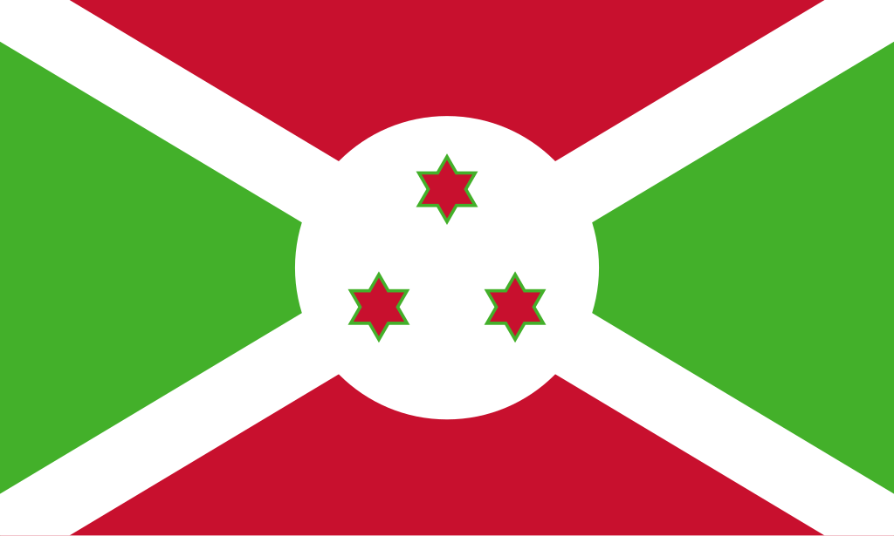

Burundi
 Burundi, oficialmente República do Burundi, é um pequeno país da África Oriental, sem saída para o mar, localizado na região dos Grandes Lagos Africanos. Faz fronteira com Ruanda ao norte, Tanzânia a leste e sul, e a República Democrática do Congo a oeste, além de ser banhado pelo Lago Tanganica, uma das maiores reservas de água doce do mundo. O país tem cerca de 13 milhões de habitantes, distribuídos majoritariamente em áreas rurais, sendo um dos países mais densamente povoados da África. A capital política é Gitega, enquanto Bujumbura, antiga capital, continua sendo o maior centro econômico. A população é formada principalmente por três grupos étnicos: hutus, tutsis e twa. Apesar de sua pequena dimensão, Burundi possui uma cultura rica, mas sua história recente foi marcada por conflitos étnicos, guerras civis e desafios socioeconômicos. Atualmente, o país é membro da União Africana, da Comunidade da África Oriental e da ONU.
História
A história de Burundi remonta a reinos tradicionais formados pelos povos tutsis e hutus, que estabeleceram monarquias organizadas séculos antes da chegada dos colonizadores europeus. No final do século XIX, o território foi incorporado à África Oriental Alemã e, após a Primeira Guerra Mundial, passou ao domínio da Bélgica como parte do mandato da Liga das Nações, junto com Ruanda, formando a colônia de Ruanda-Urundi. Durante o período colonial, os belgas reforçaram divisões étnicas, favorecendo os tutsis em cargos administrativos, o que acentuou tensões sociais. Em 1962, Burundi conquistou sua independência, inicialmente como uma monarquia, mas logo mergulhou em instabilidade política, marcada por golpes, assassinatos de líderes e conflitos entre hutus e tutsis.
Nas décadas seguintes, Burundi foi cenário de guerras civis e massacres étnicos, que resultaram em centenas de milhares de mortes e deslocamentos populacionais. Apenas no início dos anos 2000, com acordos de paz mediados internacionalmente, o país iniciou um processo de estabilização política. Em 2019, Gitega substituiu oficialmente Bujumbura como capital política e administrativa. Apesar de ainda enfrentar desafios como pobreza, corrupção e instabilidade ocasional, Burundi busca consolidar sua democracia e promover o desenvolvimento social e econômico, sendo um dos países de maior resiliência cultural da região dos Grandes Lagos Africanos.
Cultura
A cultura do Burundi é fortemente marcada pela herança dos povos hutus, tutsis e twa, que juntos moldam a identidade do país. A música e a dança têm papel central na vida social, sendo os tambores reais de Gitega, conhecidos como Ingoma, um dos símbolos culturais mais importantes, reconhecidos pela UNESCO como Patrimônio Cultural Imaterial da Humanidade. As danças tradicionais, geralmente acompanhadas por ritmos de tambores e cânticos, são usadas em cerimônias religiosas, festividades e celebrações comunitárias. A língua oficial é o kirundi, falado por quase toda a população, além do francês e do inglês, usados em contextos oficiais. O cristianismo é a religião predominante, seguido por práticas religiosas tradicionais africanas.

Clima
O clima de Burundi é do tipo tropical de altitude, influenciado por sua localização em áreas montanhosas e pela proximidade com o Lago Tanganica. As temperaturas são amenas durante o ano, variando de acordo com a altitude, sendo mais frescas nas montanhas e mais quentes nas áreas próximas ao lago. O país possui duas estações chuvosas principais: de fevereiro a maio e de setembro a novembro, intercaladas por períodos de seca. A média de chuvas é relativamente alta, o que permite a prática agrícola, base da economia nacional. Contudo, o desmatamento e a erosão dos solos têm se tornado problemas ambientais, agravados pelas variações climáticas e pelo crescimento populacional intenso.
Biodiversidade
A biodiversidade de Burundi é característica da região dos Grandes Lagos, abrigando ecossistemas que vão de florestas tropicais a áreas de savana. O Lago Tanganica, um dos mais profundos do mundo, é um destaque natural, sendo lar de inúmeras espécies de peixes endêmicos, fundamentais para a pesca local. A fauna terrestre inclui hipopótamos, crocodilos, antílopes, macacos e uma grande variedade de aves. No entanto, devido à alta densidade populacional e à intensa exploração de recursos naturais, muitos habitats foram reduzidos, colocando diversas espécies em risco de extinção.
O país conta com áreas protegidas como o Parque Nacional de Kibira, coberto por florestas tropicais e essencial para a conservação da biodiversidade, e o Parque Nacional de Ruvubu, conhecido por sua fauna variada. Esforços de conservação enfrentam dificuldades por causa da pressão demográfica, mas o ecoturismo tem potencial para se tornar uma alternativa sustentável para valorizar e preservar a natureza burundesa.
Cidades
As cidades de Burundi são relativamente pequenas em comparação a outros países africanos, refletindo seu perfil majoritariamente rural. A capital política, Gitega, está localizada em uma região montanhosa central e é um importante centro administrativo e cultural, abrigando o Museu Nacional e grupos de tambores tradicionais. Bujumbura, antiga capital e maior cidade do país, situada às margens do Lago Tanganica, continua sendo o coração econômico, com portos, indústrias e universidades. Outras cidades relevantes incluem Ngozi e Muyinga, que atuam como polos regionais de comércio e agricultura. Juntas, Gitega e Bujumbura simbolizam a transição do país entre tradição e modernidade, desempenhando papéis complementares na vida nacional.